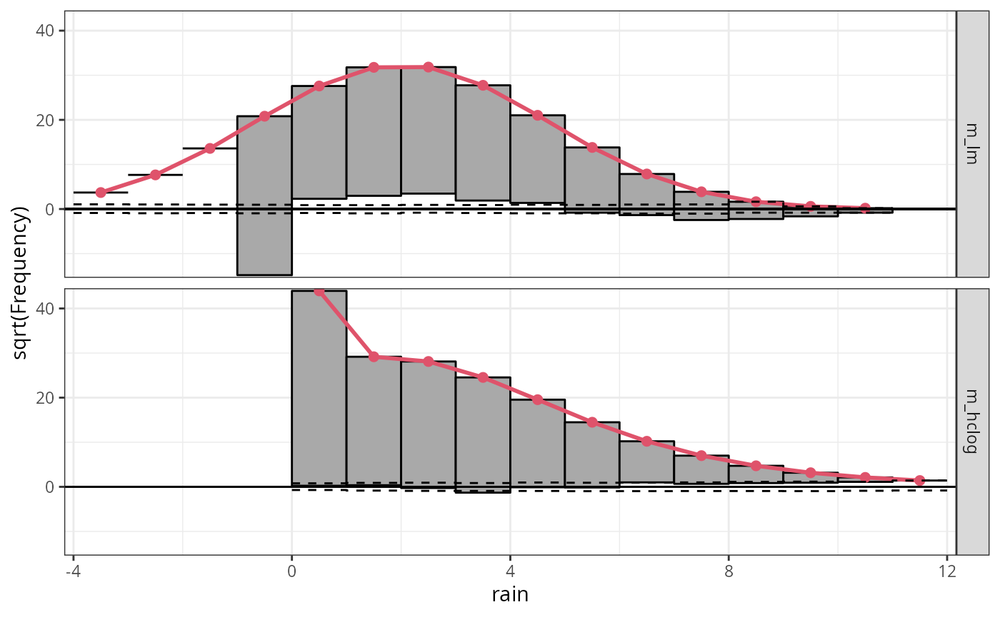
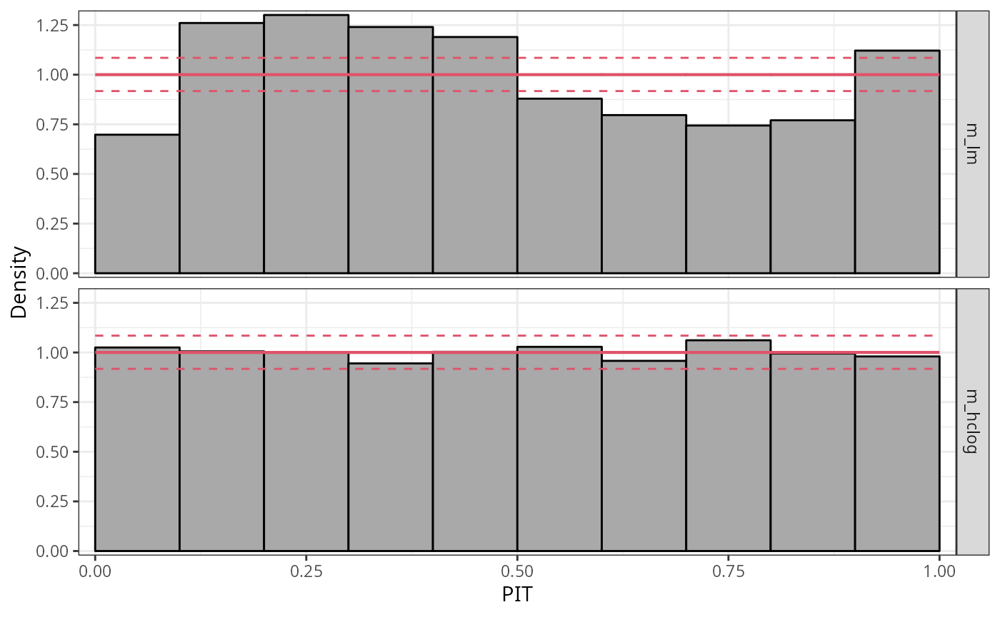
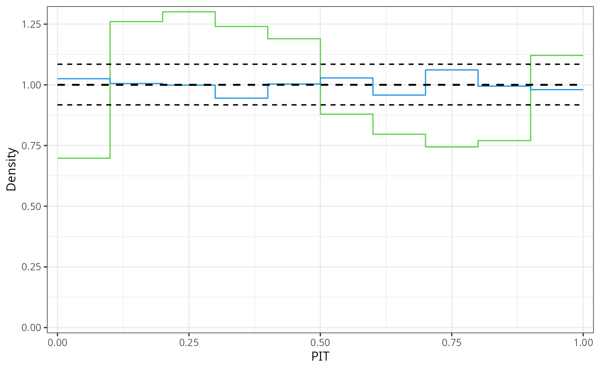
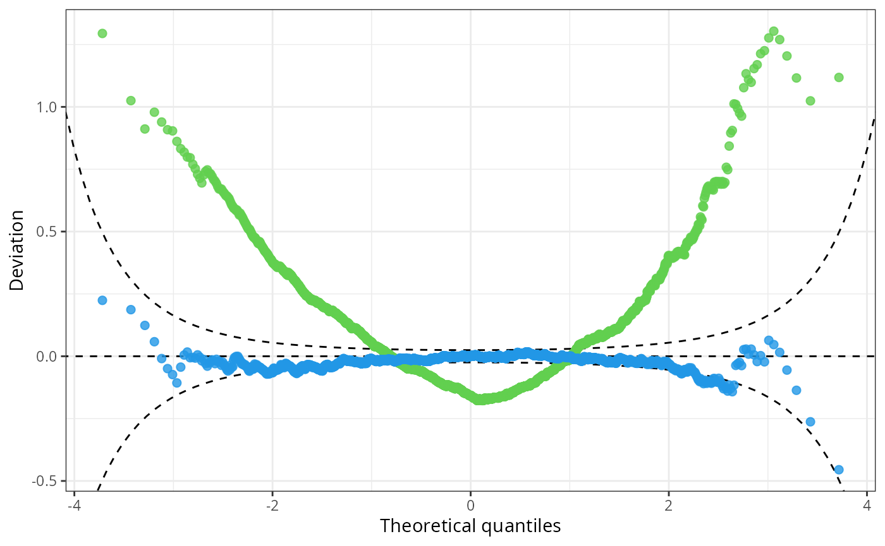

illustration_rain_ibk.RmdThe second example models 3 day-accumulated precipitation sums using
a Logistic distribution censored at zero accounting for non-negative
precipitation sums. The use case builds heavily on the vignette “Heteroscedastic
Censored and Truncated Regression with crch” given in crch by
Messner, Mayr, and Zeileis (2016).
This use-case discusses a weather forecast example application of
censored regression models. The example is taken from the vignette “Heteroscedastic
Censored and Truncated Regression with crch” provided for the
package crch by
Messner, Mayr, and Zeileis (2016).
Weather forecasts are usually based on numerical weather prediction (NWP) models, which take the current state of the atmosphere and calculate future weather by numerically simulating the main atmospheric processes. However, due to uncertain initial conditions and unknown or unresolved processes, these numerical predictions are always subject to errors. To estimate these errors, many weather centers produce what are called ensemble forecasts: multiple NWP runs that use different initial conditions and model formulations. Unfortunately, these ensemble forecasts cannot account for all sources of error, so they are often still biased and uncalibrated. Therefore, they are often calibrated and corrected for systematic errors through statistical post-processing.
One popular post-processing method is heteroscedastic linear regression where the ensemble mean is used as regressor for the location and the ensemble standard deviation or variance is used as regressor for the scale (Gneiting et al. 2005). The following example applies heteroscedastic censored regression with a logistic distribution assumption to precipitation data in Innsbruck (Austria).
The RainIbk data set contains observed 3 day-accumulated
precipitation amounts (rain) and the corresponding 11
member ensemble forecasts of total accumulated precipitation amount
between 5 and 8 days in advance (rainfc.1,
rainfc.2, … rainfc.11). In previous studies it
has been shown that it is of advantage to model the square root of
precipitation rather than precipitation itself. Thus all precipitation
amounts are square rooted before ensemble mean and standard deviation
are derived. Furthermore, events with no variation in the ensemble are
omitted:
For comparison we fit a homoscedastic linear regression model using
the least squares approach for rain with
ensmean as regressor. As a more appropriate model for
rain accounting for non-negative precipitation sums, we fit
a hetereoscedastic censored model assuming an underlying logistic
response distribution with ensmean as regressor for the
location and log(enssd) as regressor for the scale:
## linear model
m_lm <- lm(rain ~ ensmean, data = RainIbk)
## heteroscedastic censored regression with a logistic distribution assumption
m_hclog <- crch::crch(rain ~ ensmean | log(enssd), data = RainIbk, left = 0,
dist = "logistic")In the scatterplot of rain against ensmean
it can be seen, that precipitation is clearly non-negative with many
zero observations. Thus the censored regression model
m_hclog is more suitable than the linear regression model
to estimate the underlying relationship:
The significant underfitting of zero observations is also very
apparent in the rootogramm of the linear model, as it does not
correctly account for the point mass at zero. Additionally, a weak
wavelike pattern indicates a slight overfitting of precipitation sums
between zero and 5mm and an underfitting of precipitation sums above. In
contrast, the censored logistic regression m_hclog provides
a pretty good marginal fit, where the expected squared frequencies
closely match the squared observed frequencies:
r1 <- rootogram(m_lm, plot = FALSE)
r2 <- rootogram(m_hclog, plot = FALSE)
ggplot2::autoplot(c(r1, r2))
The PIT histogram of the linear model m_lm is
skewed, indicating a misfit in terms of the probabilistic calibration,
whereas the PIT histogram of the linear model is rather
uniformly distributed.

For a better comparison of the two model fits, alternatively a line-style PIT histogram can also be shown:
ggplot2::autoplot(c(p1, p2), colour = c(3, 4), style = "line", single_graph = TRUE, confint_col = 1, confint = "line", ref = FALSE)
To further analyse the misfit of the linear model in terms of probabilistic calibration, we transform the PIT residuals to the normal scale and increase the number of breaks in the PIT histogram. Transforming to the normal scale spreads the values at the tails of the distribution further apart, and increasing the breaks prevents potential masking of small scale patterns.
We can see that the distribution of PIT residuals is right skewed with more values between -2 and 0, but less values between 0 and 2 compared to the standard normal distribution:
This is also reflected in the pattern of the Q-Q plot of the linear model: Due to the high frequency in values between -2 and 0, the observed quantile residuals increase slower in this region relative to the standard normal quantiles. However, the low frequency of quantile residuals above zero leads to an higher increase in quantile residuals compared to the standard normal quantiles.
In summary, the Q-Q plot of the linear model has a positive
curvature, bending up at both ends of the distributional tails. The
censored logistic regression m_hclog follows more or less
the reference line indicating normally distributed quantile
residuals:
q1 <- qqrplot(m_lm, plot = FALSE)
q2 <- qqrplot(m_hclog, plot = FALSE)
ggplot2::autoplot(c(q1, q2), colour = c(3, 4), alpha = 0.8, single_graph = TRUE, simint = FALSE, confint ="line")Consistent with the pattern of right-skewed PIT residuals corresponding to a “too left-skewed” fitted distribution, a U-shaped pattern is evident in the worm plot of the linear model; the censored logistic is more or less flat around zero.
w1 <- wormplot(m_lm, plot = FALSE)
w2 <- wormplot(m_hclog, plot = FALSE)
ggplot2::autoplot(c(w1, w2), colour = c(3, 4), alpha = 0.8, single_graph = TRUE, simint = FALSE, confint ="line")